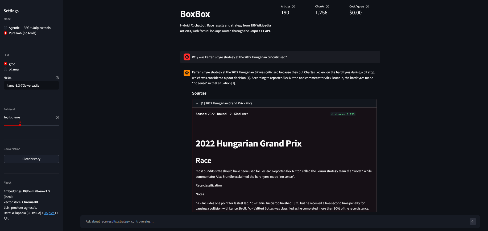

BoxBox — Hybrid RAG Chatbot for Formula 1
A retrieval-augmented chatbot for Formula 1 race history (2018–2025). Narrative questions are answered with inline Wikipedia citations from a Chroma vector index; factual lookups (winners, qualifying, standings) are routed through the Jolpica F1 API via LLM tool-calls. The split — narrative via RAG, facts via tools — fixes the failure mode where pure RAG drifts on exact-answer questions.
Tech Stack: Python 3.11, ChromaDB, sentence-transformers (BGE-small-en-v1.5), Streamlit, Ragas, provider-agnostic LLM layer (Anthropic, OpenAI, Groq, Ollama).
Key Result: Iterated from hit@k = 0.36 on a pure-RAG baseline to an agentic v2 that correctly answers factual lookups by routing them to structured data; full v1-vs-v2 evaluation harness reproducible from evals/questions.yaml.